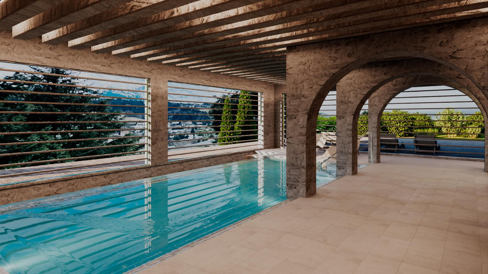
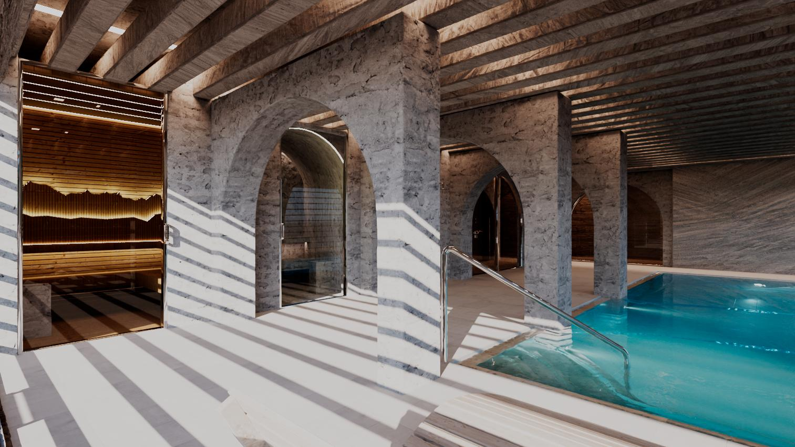
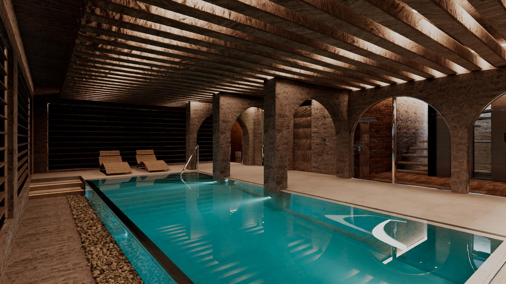
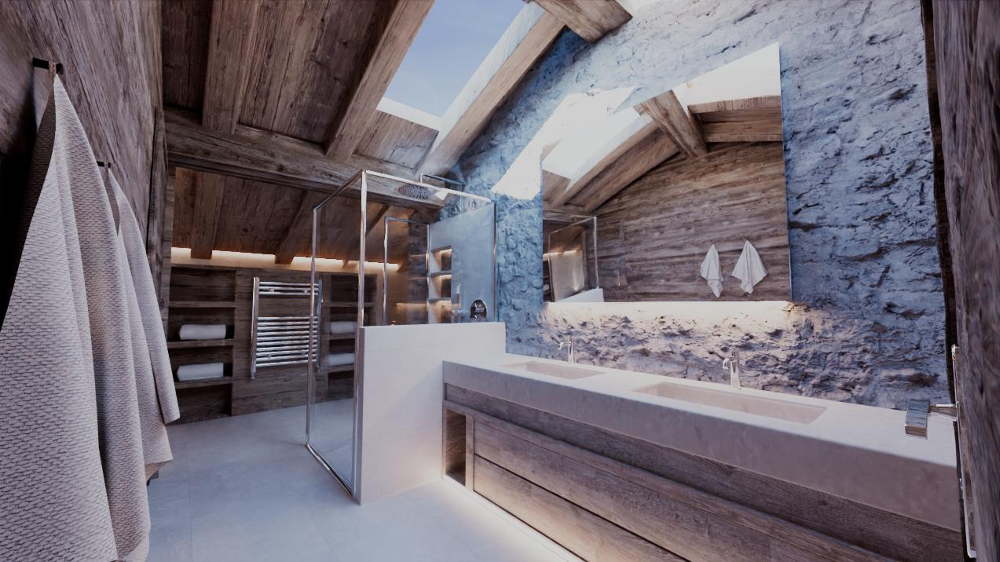
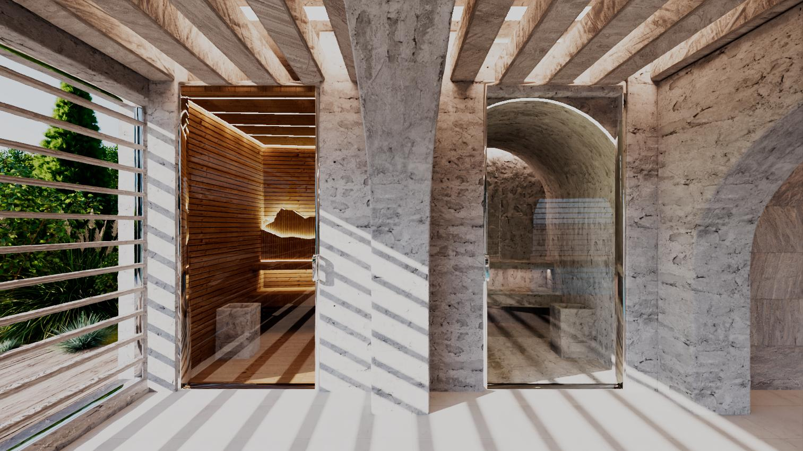
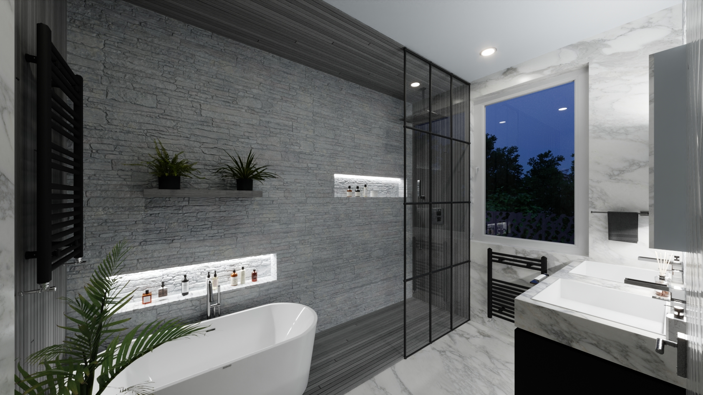
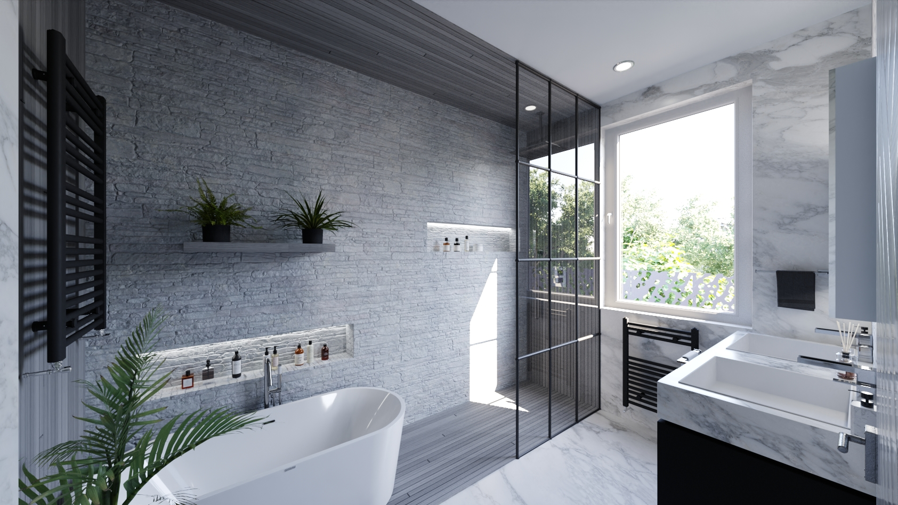
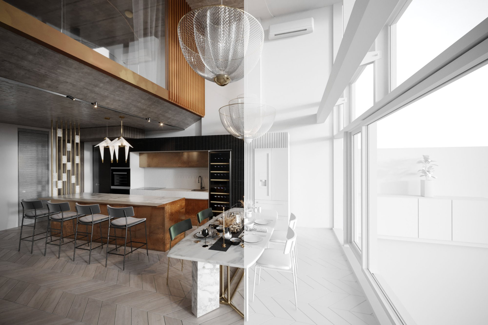
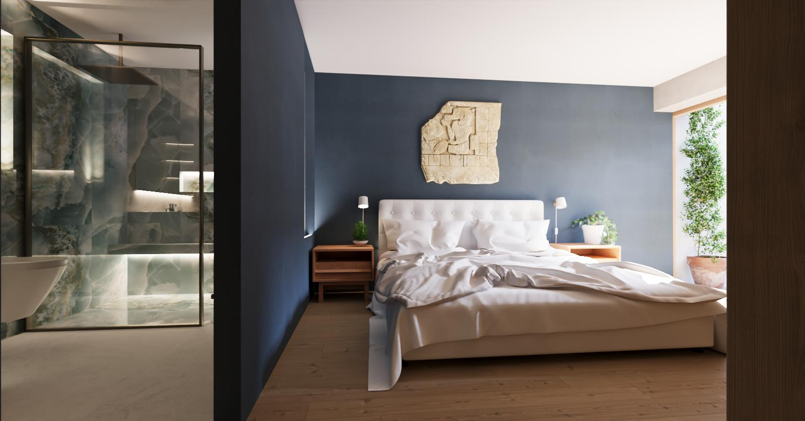

Projects
01
Chalet K
Megeve, France
A study in alpine warmth, aged timber, and raw stone. Visualised across the full chalet: master bathrooms, and a complete lower-ground wellness floor with indoor pool, sauna, hammam, and gym.






02
Nyon Apartment
Nyon, Switzerland
A lakeside apartment studied across kitchen and bathroom in day and night light. Marble, brass, and warm grey tile throughout.




03
15 Hatfield Road
Chiswick, London
A Passivhaus home in West London redesigned around light, garden connection, and spatial flow. South-facing kitchen, onyx master suite. See also: Process.


